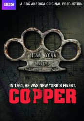

")
Alternativ: Copper
 
 IMDB-Wertung: 7.5 / 10
IMDB-Wertung: 7.5 / 10  Metascore:
Metascore: 
Das historische New Yorker Viertel ‚Five Points‘ wird im Jahr 1864 überwiegend von Einwanderern bewohnt. Gewalt, Prostitution und Epidemien sind an der Tagesordnung. In dieser unwirtlichen Gegend bemüht sich Kevin Corcoran, ein rauer Cop mit irischen Vorfahren, täglich um Recht und Ordnung. Unterstützung erhält er von Robert Morehouse, dem Sohn eines reichen Industriellen sowie vom afroamerikanischen Arzt Matthew Freeman, einem Pionier der Forensik. Nebenbei versucht Kevin das Verschwinden seiner Frau und den Tod seiner Tochter aufzuklären.
Jahr: 2012
Dauer: 42 Minuten
FSK: 18
Land: USA Studio: BBC AmericaTonspuren: DTS - ,
Untertitel:
Auflösung: 720p (1280x720) Größe: 1351 MB
Genre: Action, Drama, TV-Serie
Regisseur: Larysa Kondracki, Ken Girotti, Jeff Woolnough, Clark Johnson, David Hyde, Deborah Chow, Nathan Morlando, T.J. Scott, Kari Skogland, Clement Virgo
Drehbuch: Tom Fontana
Soundtrack:
Darsteller:
 Ato Essandoh als Doctor Matthew Freeman
Ato Essandoh als Doctor Matthew Freeman Tessa Thompson als Sara Freeman
Tessa Thompson als Sara Freeman Franka Potente als Eva Heissen
Franka Potente als Eva Heissen Aaron Poole als Robert Cobb Kennedy
Aaron Poole als Robert Cobb Kennedy Alfre Woodard als Hattie Lemaster
Alfre Woodard als Hattie Lemaster Peter Bryant als Marcus Freeman
Peter Bryant als Marcus Freeman Andrew Howard als Mr. O'Rourke
Andrew Howard als Mr. O'Rourke Patrick Garrow als David Holland
Patrick Garrow als David Holland Daniel Kash als Jakob Schwarz
Daniel Kash als Jakob Schwarz Jonathan Higgins als Mark Coddington
Jonathan Higgins als Mark Coddington Dan Lett als Alderman Byford Stonington
Dan Lett als Alderman Byford Stonington William Baldwin als William 'Wild Bill' Eustace
William Baldwin als William 'Wild Bill' Eustace Lee Tergesen als Philomen Keating
Lee Tergesen als Philomen Keating Jim Codrington als Reverend Albin Garland
Jim Codrington als Reverend Albin Garland Tom Barnett als Billy Hannigan
Tom Barnett als Billy HanniganDatei: X:\HD-Serien\Copper Justice is Brutal\S01\Copper Justice is Brutal S01E01 Die Zwillingsschwestern.mkv seit 20.06.2017
Festplatte: HD Serien(A-H)
 Es gibt insgesamt 182 Filme in der Gruppe 'HD-Serien'
Es gibt insgesamt 182 Filme in der Gruppe 'HD-Serien'